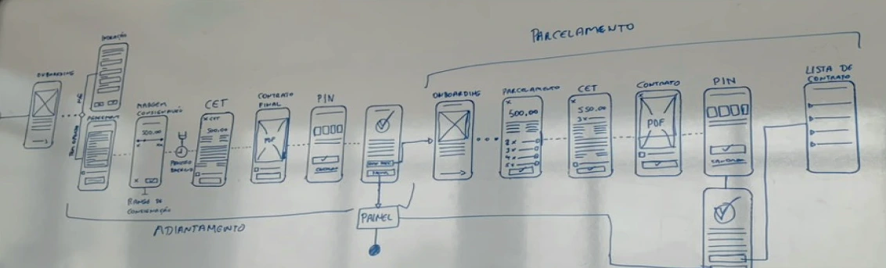
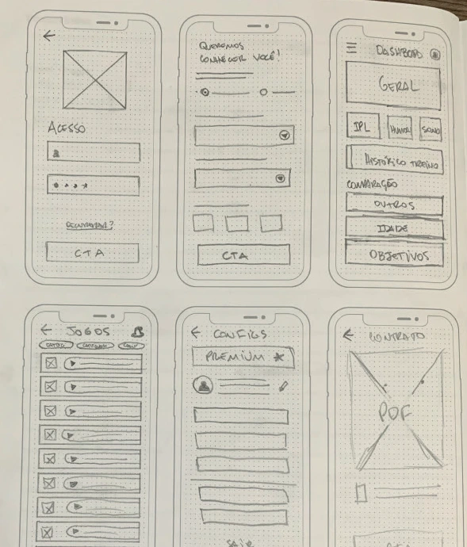

Suporte acessível
Ajuda na tela inicial, no menu e no perfil. Os tutoriais continuam disponíveis depois da primeira utilização.
 Ver tela completa
Ver tela completa
Conlife
Serviços financeiros, telefonia e benefícios em uma experiência desenhada para pessoas com diferentes níveis de familiaridade com tecnologia.
Explore as jornadas
Design de produtoPesquisa, UX, UI, branding e prototipação
SolucciCriação e entrega para desenvolvimento
Em colaboraçãoAplicativo desenvolvido por outra equipe
Uma rede de farmácias precisava oferecer uma conta digital aos funcionários. O uso tinha que ser claro desde o cadastro, sujeito à aprovação do banco parceiro, até as operações do dia a dia.
As decisões partiram das dificuldades encontradas na pesquisa: dúvidas de uso, acesso ao suporte e diferentes tamanhos de tela. A estrutura também precisava receber novos serviços sem perder a familiaridade.
Escolha uma área ou toque nas ações da tela.
Use as setas para explorar as demais etapas.
O saldo, as principais operações e o acesso ao suporte compartilham a tela inicial. A autorização por PIN é uma etapa própria da jornada.
Explore os botões da tela ou use as setas. Demonstração do design, sem operações bancárias.
01 / 03 Visão da conta
Ajuda na tela inicial, no menu e no perfil. Os tutoriais continuam disponíveis depois da primeira utilização.
Ver tela completaTextos diretos e ações prioritárias explicam o próximo passo, sem depender do vocabulário de quem constrói o produto.
Conta, pagamentos e benefícios compartilham padrões de navegação e hierarquia, mesmo quando as tarefas mudam.
Uma recarga envolve mais que o pagamento.
O fluxo também prevê falhas e alternativas.
Mapa vetorial. Amplie para ler os detalhes e deslize para percorrer os caminhos.
A escolha da forma de pagamento divide a jornada. O Pix depende da confirmação do pagamento. O saldo da conta exige PIN e movimentação para a tesouraria. Quem não tem conta recebe orientação para encontrar um ponto de recarga.
Pesquisa, esboços e alinhamento
antes da entrega ao desenvolvimento.


O trabalho passou por pesquisa, definição das jornadas, wireframes, branding, guia visual, interfaces e protótipos. Testes e ajustes antecederam a preparação dos materiais para a equipe de desenvolvimento.
Além do aplicativo, o escopo incluiu a identidade e o site institucional, com implementação das páginas em HTML e CSS.
Após a chegada do SuperApp, houve aumento da adesão ao banco e redução das ligações ao suporte sobre dúvidas simples de uso.
Pessoas que utilizavam o aplicativo também destacaram a aparência bonita e moderna da interface.
Resultados qualitativos relatados pela Solucci, responsável pelo design do projeto.